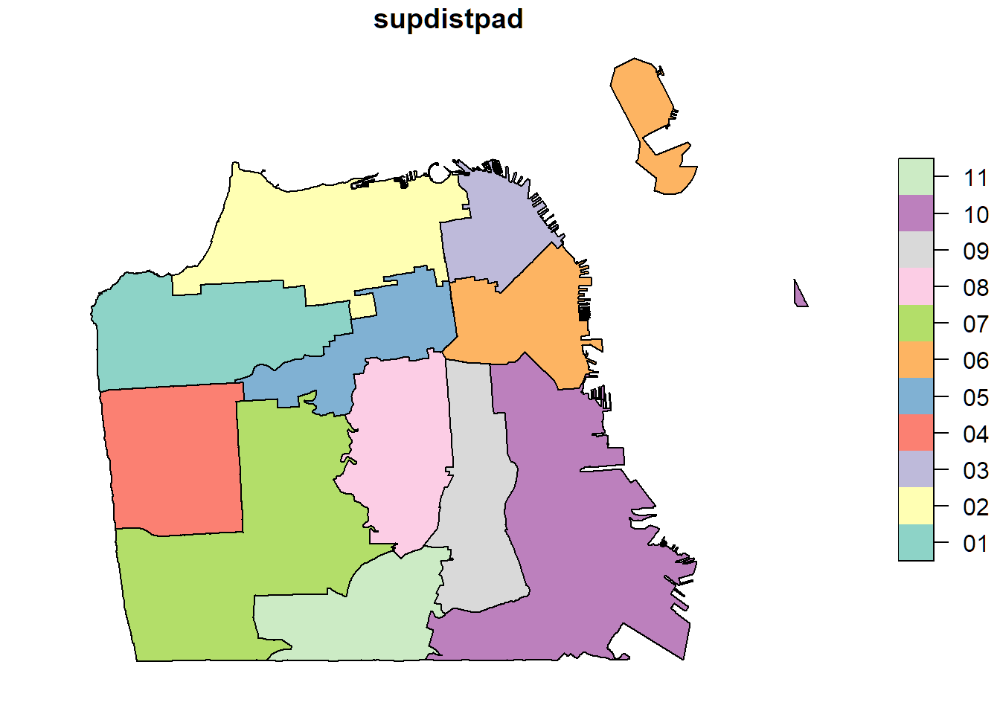
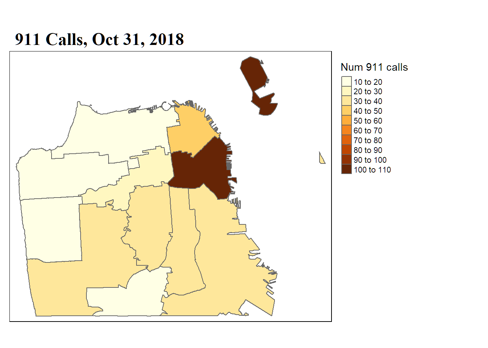

Create a new R script in RStudio (File → New File → R Script).
Click the ‘Copy’ button below to copy the questions to the clipboard, then paste them into your script. Under each question, write R code. Run each line of R code as you enter it (press the Run button or ctrl+enter) to make sure it works.
Remember to save your script periodically to avoid losing work if RStudio crashes.
If you get stuck, click on the ‘hint’ link to see a hint, or the question number to see the answer. Click again to hide.
Questions? Ask the instructor.
##################################################
#### MAKE A MAP OF 911 CALLS IN SAN FRANCISCO ####
##################################################
# In this exercise, you’ll compute the number of 911 calls per Supervisor
# District for Halloween 2018. You’ll then make a chorlopleth map of the number
# of calls per Supervisor District.
# 1. Import the Supervisor District Boundaries
library(sf)
sup_dist_bnd <- sf::read_sf("https://data.sfgov.org/resource/keex-zmn4.geojson")
glimpse(sup_dist_bnd)
plot(sup_dist_bnd['supdistpad'])## Observations: 11
## Variables: 6
## $ supdistpad <chr> "11", "09", "03", "01", "08", "02", "04", "07", "10", "06", "05"
## $ supdist <chr> "SUPERVISORIAL DISTRICT 11", "SUPERVISORIAL DISTRICT 9", "SUPERVISORIAL DISTRICT 3", "SUPE...
## $ supname <chr> "Safai", "Ronen", "Peskin", "Fewer", "Mandelman", "Stefani", "Mar", "Yee", "Walton", "Hane...
## $ supervisor <chr> "11", "9", "3", "1", "8", "2", "4", "7", "10", "6", "5"
## $ numbertext <chr> "ELEVEN", "NINE", "THREE", "ONE", "EIGHT", "TWO", "FOUR", "SEVEN", "TEN", "SIX", "FIVE"
## $ geometry <MULTIPOLYGON [°]> MULTIPOLYGON (((-122.4225 3..., MULTIPOLYGON (((-122.4109 3..., MULTIPOLYGON ...
# 2. What is the URL for the Fire Department Calls for Service? Which field contains
# the name of the Supervisor District? Which field contains the call date?
Looking at the Fire Department Calls for Service data page, we find:
The data URL is https://data.sfgov.org/resource/nuek-vuh3.json
The field that contains the name of the Supervisor District is ‘supervisor_district’, and the field with the call date is ‘call_date’.
# 3. Import unique 911 responses for 10/31/2018. How many responses were there?
See the final example in Using the Socrata API.
The Fire Department Calls for Service table records responses to a 911 call (and there are usually more than one unit responding to a single call). To capture the number of calls, you need to use distinct with ‘incident_number’ to remove duplicates.
ems_resp_url <- "https://data.sfgov.org/resource/nuek-vuh3.json?"
## Download unique rows for district supervisor & incident id
pq_select <- "$select=distinct supervisor_district,incident_number"
pq_where <- "&$where=call_date between '2018-10-31T00:00:00' and '2018-10-31T23:59:59'"
pq_order <- "&$order=supervisor_district"
ems_df <- read.socrata(ems_resp_url %>%
paste0(pq_select, pq_where, pq_order) %>%
URLencode())
glimpse(ems_df)## Observations: 368
## Variables: 2
## $ supervisor_district <chr> "1", "1", "1", "1", "1", "1", "1", "1", "1", "1", "1", "1", "1", "1", "10", "10",...
## $ incident_number <chr> "18127307", "18127336", "18127347", "18127349", "18127377", "18127420", "18127430...⇒ There were 368 responses.
# 4. Compute the total number of calls per Supervisor District.
## Compute the number of calls per Supervisor District
ems_totals_df <- ems_df %>%
dplyr::group_by(supervisor_district) %>%
dplyr::summarise(num_calls = n())
ems_totals_df## # A tibble: 12 x 2
## supervisor_district num_calls
## <chr> <int>
## 1 1 14
## 2 10 36
## 3 11 15
## 4 2 17
## 5 3 48
## 6 4 11
## 7 5 27
## 8 6 104
## 9 7 31
## 10 8 30
## 11 9 33
## 12 None 2# 5. Find the columns that connect the supervisor district boundary attribute table
# and the summary of calls per district.
glimpse(ems_totals_df)
glimpse(sup_dist_bnd)## Observations: 12
## Variables: 2
## $ supervisor_district <chr> "1", "10", "11", "2", "3", "4", "5", "6", "7", "8", "9", "None"
## $ num_calls <int> 14, 36, 15, 17, 48, 11, 27, 104, 31, 30, 33, 2
## Observations: 11
## Variables: 6
## $ supdistpad <chr> "11", "09", "03", "01", "08", "02", "04", "07", "10", "06", "05"
## $ supdist <chr> "SUPERVISORIAL DISTRICT 11", "SUPERVISORIAL DISTRICT 9", "SUPERVISORIAL DISTRICT 3", "SUPE...
## $ supname <chr> "Safai", "Ronen", "Peskin", "Fewer", "Mandelman", "Stefani", "Mar", "Yee", "Walton", "Hane...
## $ supervisor <chr> "11", "9", "3", "1", "8", "2", "4", "7", "10", "6", "5"
## $ numbertext <chr> "ELEVEN", "NINE", "THREE", "ONE", "EIGHT", "TWO", "FOUR", "SEVEN", "TEN", "SIX", "FIVE"
## $ geometry <MULTIPOLYGON [°]> MULTIPOLYGON (((-122.4225 3..., MULTIPOLYGON (((-122.4109 3..., MULTIPOLYGON ...⇒ In the 911 calls table, the (unpadded) district number is saved in a character field called ‘supervisor_district’.
⇒ In sup_dist_bnd, the district number is in a character field called ‘supervisor’.
# 6. Join the number of calls per Supervisor District table to the attribute table
# of the Supervisor District boundaries.
sup_dist_bnd <- sup_dist_bnd %>%
dplyr::left_join(ems_totals_df, by = c(supervisor = "supervisor_district"))
sup_dist_bnd %>% dplyr::select(supdistpad, supname, num_calls)## Simple feature collection with 11 features and 3 fields
## geometry type: MULTIPOLYGON
## dimension: XY
## bbox: xmin: -122.5149 ymin: 37.70813 xmax: -122.3279 ymax: 37.83243
## CRS: 4326
## # A tibble: 11 x 4
## supdistpad supname num_calls geometry
## <chr> <chr> <int> <MULTIPOLYGON [°]>
## 1 11 Safai 15 (((-122.4225 37.71789, -122.4225 37.71782, -122.4235 37.7172, -122.4238 37.7170~
## 2 09 Ronen 33 (((-122.4109 37.76941, -122.4109 37.76932, -122.4108 37.76923, -122.4108 37.769~
## 3 03 Peskin 48 (((-122.392 37.79387, -122.3922 37.79393, -122.3925 37.79377, -122.3932 37.7932~
## 4 01 Fewer 14 (((-122.4937 37.78761, -122.4937 37.78649, -122.4935 37.7835, -122.4925 37.7835~
## 5 08 Mandelman 30 (((-122.4233 37.77206, -122.4233 37.77194, -122.4232 37.77181, -122.4231 37.771~
## 6 02 Stefani 17 (((-122.4192 37.80845, -122.4192 37.80839, -122.4191 37.8078, -122.4189 37.8068~
## 7 04 Mar 11 (((-122.4749 37.76179, -122.475 37.76175, -122.4759 37.76171, -122.4759 37.7617~
## 8 07 Yee 31 (((-122.4485 37.75904, -122.4485 37.75895, -122.4485 37.75861, -122.4483 37.758~
## 9 10 Walton 36 (((-122.399 37.76973, -122.3982 37.76904, -122.3974 37.76844, -122.3967 37.7678~
## 10 06 Haney 104 (((-122.3938 37.79374, -122.3932 37.79323, -122.3925 37.79377, -122.3922 37.793~
## 11 05 Brown 27 (((-122.4216 37.78662, -122.4214 37.78653, -122.4214 37.78617, -122.4213 37.785~# 7. Make a choropleth map of the results
library(tmap)
tm_shape(sup_dist_bnd) +
tm_polygons(col='num_calls', title="Num 911 calls", n=10) +
tm_legend(legend.outside=T) +
tm_layout(main.title="911 Calls, Oct 31, 2018",
main.title.size = 1.5,
main.title.fontface = 2,
main.title.fontfamily = "serif")